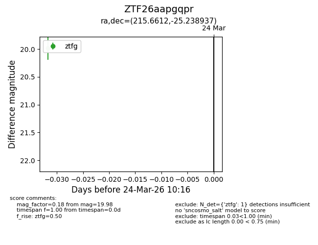
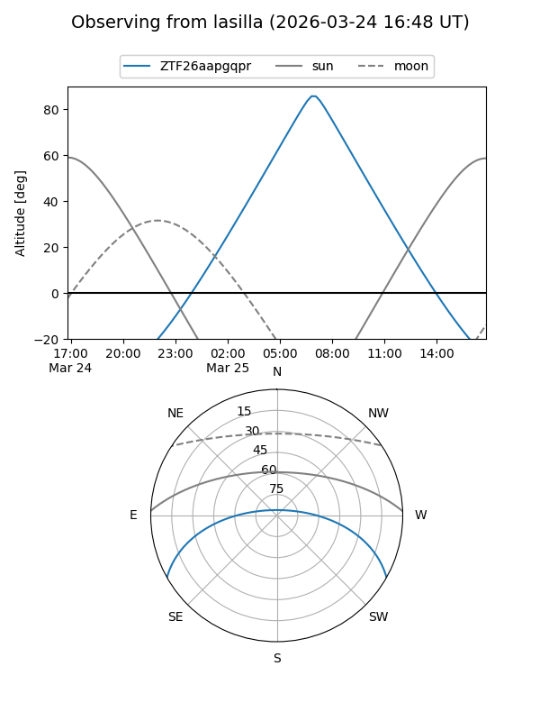
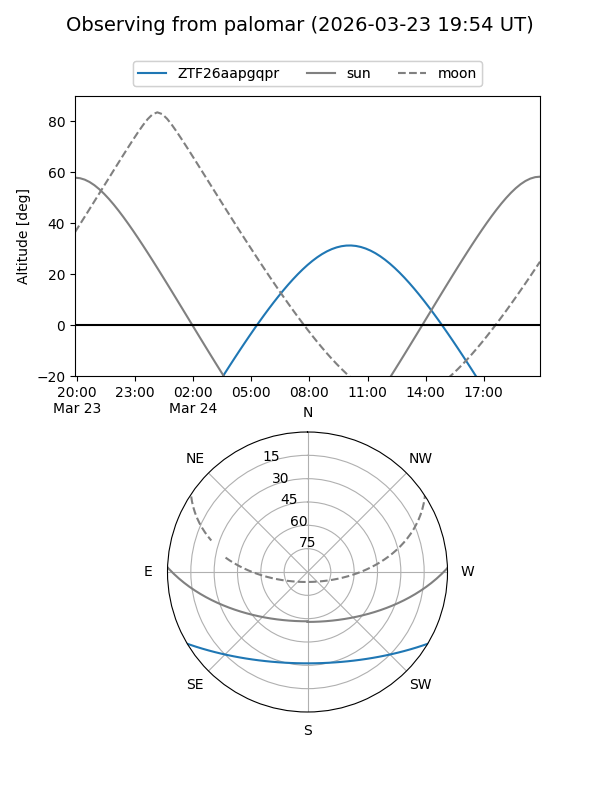

ZTF26aapgqpr
Target ZTF26aapgqpr at 2026-03-24 10:19
Aliases and brokers:
FINK: link
Lasair: link
ALeRCE: link
alt names
ZTF26aapgqpr (ztf,fink_ztf)
Coordinates:
equatorial (ra, dec) = 215.6612,-25.23894
equatorial (HMS+DMS) = 14:22:38.68,-25:14:20.17
galactic (l, b) = (327.7017,+33.20849)
Flags:
Photometry:
last ztfg=19.98
1 ztfg detections
Lightcurve

Visibility


Additional plots